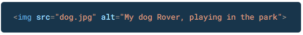

Updating hero block images
In the Hero Blocks with Images Tutorial, you learnt how to add a background image to a hero block, add a shadow effect to the hero text, and include a tinted overlay behind the hero text and in front of the background image.
Background images differ from regular images on a web page:
- As you learnt in the Working with Images tutorial, regular images are added to a web page with the <img> tag.
The image link is in the HTML of the web page. See the example below.

- However, background images are not set in the HTML of the web page.
Background images are set in the CSS stylesheet file that is linked to the web page. See the example below.

All web pages in the template website use the same stylesheet, named global.css.
So: how can you add different background images to different pages?
Using the web page style tag to set background images
Your Portfolio, JavaScript and Wordpres pages all use a background image in their hero blocks.
In the example below, you can see how the sub-folder location and name of the background image for the WordPress page is set in the head of the page.

To use a different background image, link to the new file name of the new image as shown in the HTML above.
Background images are stored in your assets/img/ sub-folder.
To make the hero text easier to read against the background image, there is an overlay in front of the image and behind the heading and sub-heading. Its value above is set to 0.3.
Depending on your chosen image, you may want to make the overlay:
- Less opaque (more transparent) by reducing its value to 0.2 or 0.1.
- More opaque (less transparent) by increasing its value to 0.4 or 0.5.
Also in the WordPress web page example above, the overlay color is set to black (0,0,0). Alernatively, you could apply a colour tint to the overay by changing this to another RGB colour value. For example, to blue (0,0,255) or green (0,255,0).
The vertical (top-bottom) and horizontal (left-right) spacing within the edges of the hero block is set for all web pages by padding values in the global.css stylesheet.

However, depending on the amount of text within the h1 and h2 headings, you may want to change this slightly in the head of each web page – for large screens, on mobile screens or on both.
Updating hero block videos
Unlike background-images, background videos are set directly in the HTML of a web page.
Below is the HTML of the template 'home page' which contains a background video and a 'poster' image which displays until the video is fully downloaded into the user's web browser.

To use a different video and poster image, link to the new file names as shown in the HTML above.
Background videos and poster images are stored in your assets/videos/ sub-folder.
As with background images, background videos can also have a tinted overlay. In the website template 'home page', the overlay has a slightly blue tint colour that is darker at the top of the hero block than at the bottom.

Change the overlay tint colour and opacity according to your chosen colour scheme.
Applying your website colour scheme
In deciding which colours to use with your web pages, you may find this list of resources in a previous Tutorial helpful.
Menu navbar colours
In the navbar block at the top of your six web pages, you can see two classes navbar-dark and bg-dark. These, working together, control the background colour of the navbar.

If you prefer a navbar with a light background, replace these classes with navbar-light and bg-light as shown below.

When you change the navbar background from dark to light, the colour of the hyperlinks in the navbar also changes accordingly. In this way, the text of the menu links is always visible against the navbar background.
You can edit the dark or light background colour of the navbar in the global.css stylesheet.
For mobile screens, you can also change the colour of the three bars on the hamburger icon.
Another option for your navbar background is to use a linear gradient.
Whichever background colour you choose, you can also change the text colour of the menu options.
Unlike other web page elements such as headings or text paragraphs, hyperlinks are interactive. And their visual appearance can change depending on whether and how the user interacts with them.
You can think of hyperlinks as having two main states:
- Passive state: This is how a hyperlink looks when the user is not interacting with it.
In CSS, the link passive state is controlled by the link and visited selectors. For example:
- Interactive state: This is how a hyperlink looks when the user is interacting with it – such as hoverng over it with the mouse, or clicking/tapping on the link.
In CSS, the link interactive state is controlled by the hover and active selectors. For example:
Update the colours of your menu links for both their passive and interactive states, as required.
In the pages of the website template, all the buttons have a Bootstrap CSS class of btn-primary that gives them a blue background colour and white text.
You can see a full list of Bootstrap button CSS classes on the official website.

For example, to display a button in yellow with black text, replace the class of btn-primary with btn-warning.
The background colour of the footer is set in the global.css file as shown below.

You can edit this, and also the colours of the text and hyperlinks in the footer.
Ensure there is sufficient contrast between the text and background colours.
Another option for your footer background is to use a linear gradient.
Heading and sub-heading colours
By default, headings and sub-headings (other than those within hero blocks) are coloured black in the global.css file.
To change these, enter different colour styles at the end of the stylesheet. For example:
h1, h2, h3 { color: #76448a }
Paragraph text colours
By default, paragraph text and bullet text is coloured black in the global.css file.
To change these, enter a different but also darker colour style at the end of the stylesheet. For example:
p, li { color: #222222 }
Upload your website to GitHub
The final step is to upload your website pages and folders to GitHub.
- Sign in to your GitHub account and, at the left of the screen, click the name of the repository that holds your web pages.
- On the next screen, click the Add file button and then choose Upload files from the dropdown list.

- In File/Windows Explorer on your computer, display your websites folder and then drag-and-drop the following files and sub-folders to the GitHub tab in your web browser.

- Scroll down to the bottom of the GitHub screen, and accept or edit the short message (Add files via upload) in the Commit changes box.
Finally, click the green Commit changes button to upload your files and folders.
Your web pages are now published on GitHub. Your Home page has a web address similar to the following, where username is the username you have chosen for your GitHub account:
https://username.github.io/index.html
or, simply:
https://username.github.io
It may take a few minutes for your uploaded files to appear on GitHub.
Return to Contents.